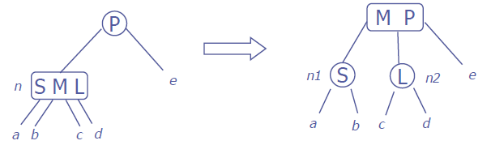

-- <pre>

data Tree:: Nat ~> *0 ~> *0 where
  Leaf1 :: a -> Tree Z a
  Leaf2 :: a -> a -> Tree Z a
  Node1 :: Tree n a -> a -> Tree n a -> Tree (S n) a
  Node2 :: Tree n a -> a -> Tree n a -> a -> Tree n a -> Tree (S n) a

data BadTree :: Nat ~> *0 ~> *0 where
 Leaf3 :: a -> a -> a -> BadTree Z a
 Node3 :: Tree n a -> a -> Tree n a -> a -> Tree n a -> a -> Tree n a -> BadTree (S n) a

joinL:: BadTree n a -> a -> Tree n a -> Tree (S n) a
joinL (Leaf3 s m l) p x = Node2 (Leaf1 s) m (Leaf1 l) p x
-- <A HREF="http://?"></A>
joinL (Node3 a s b m c l d) p e = Node2 (Node1 a s b) m (Node1 c l d) p e
-- <A HREF="http://?"></A>


joinR:: Tree n a -> a -> BadTree n a -> Tree (S n) a
joinR x p (Leaf3 s m l) = Node2 x p (Leaf1 s) m (Leaf1 l)
-- <A HREF="http://?"></A>
joinR a p (Node3 b s c m d l e) = Node2 a p (Node1 b s c) m (Node1 d l e)
-- <A HREF="http://?"></A>

insert:: a -> Tree n a -> (Tree n a + BadTree n a)
insert x (Leaf1 y) =
  case compare x y of
    LT -> L (Leaf2 x y)
    GT -> L (Leaf2 y x)
    EQ -> L (Leaf1 y)
insert x (Leaf2 y z) =
  case (compare x y,compare x z) of
    (LT,_) ->  R (Leaf3 x y z)
    (_,GT) ->  R (Leaf3 y z x)
    (GT,LT) -> R (Leaf3 y x z)
    (_,EQ) ->  L (Leaf2 y z)
    (EQ,_) ->  L (Leaf2 y z)
insert x (Node1 t1 y t2) =
  case compare x y of
    LT -> case insert x t1 of
            L t3 -> L (Node1 t3 y t2)
            R t3 -> L (joinL t3 y t2)
    GT -> case insert x t2 of
            L t3 -> L (Node1 t1 y t3)
            R t3 -> L (joinR t1 y t3)
    EQ -> L (Node1 t1 x t2)
insert x (Node2 t1 y t2 z t3) =
  case (compare x y,compare x z) of
    (LT,_) ->  case insert x t1 of
                 L t4 -> L(Node2 t4 y t2 z t3)
                 R (Leaf3 a b c) -> R(Node3 (Leaf1 a) b (Leaf1 c) y t2 z t3)
                 R (Node3 t4 a t5 b t6 c t7) ->
                      R(Node3 (Node1 t4 a t5) b (Node1 t6 c t7) y t2 z t3)
    (_,GT) ->  case insert x t3 of
                 L t4 -> L(Node2 t1 y t2 z t4)
                 R (Leaf3 a b c) -> R(Node3 t1 y t2 z (Leaf1 a) b (Leaf1 c))
                 R (Node3 t4 a t5 b t6 c t7) ->
                      R(Node3 t1 y t2 z (Node1 t4 a t5) b (Node1 t6 c t7))
    (GT,LT) -> case insert x t2 of
                 L t4 -> L(Node2 t1 y t4 z t3)
                 R (Leaf3 a b c) -> R(Node3 t1 y (Leaf1 a) b (Leaf1 c) z t3)
                 R (Node3 t4 a t5 b t6 c t7) ->
                      R(Node3 t1 y (Node1 t4 a t5) b (Node1 t6 c t7) z t3)
    (_,EQ) ->  L (Node2 t1 y t2 z t3)
    (EQ,_) ->  L (Node2 t1 y t2 z t3)

insertTree:: a -> Tree n a -> (Tree n a + Tree (S n) a)
insertTree a t =
  case insert a t of
    L x -> L x
    R (Leaf3 a b c) -> R(Node1 (Leaf1 a) b (Leaf1 c))
    R (Node3 a small b medium c large d) -> R(Node1 (Node1 a small b) medium (Node1 c large d))
-- <A HREF="http://?"></A>

-- </pre>